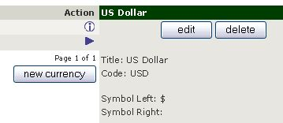
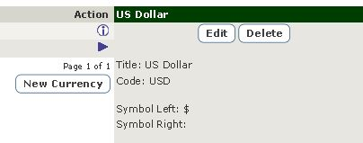

Current Support Thread at Zen Cart Forums: http://www.zen-cart.com/showthread.php?211505-CSS-Buttons-for-Admin-Support-Thread
This plugin replaces Zen-Cart admin's button functionality with some CSS3 styling. The buttons produced have rounded corners in the more recent browsers and "fall back" to squared corners on non-CSS3 aware browsers.
Once you have installed the SQL patch provided by the plugin, there is an additional configuration item in your admin's Configuration->Layout Settings: Use CSS Buttons (Admin)?. Set the value to false (the default) to disable the CSS-button functionality; set the value to true to enable the functionality.
 The image to the left shows the default look of your admin's Localization->Currencies; the image to the right shows the same page using the default CSS styling (controlled by /YOUR_ADMIN/includes/stylesheet_css_buttons_admin.css).
There are core-file overwrites in this plugin; you should always backup your cart's database and files prior to making any changes.
/css_buttons_admin_install.sql, copy and paste the contents of that file into your admin's Tools->Install SQL Patches and press the Send button.Replace the backup copies of the files you copied during the installation, delete the new files and run the plugin's file /css_buttons_admin_uninstall.sql.